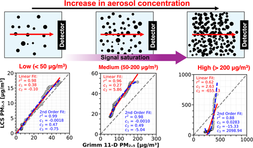
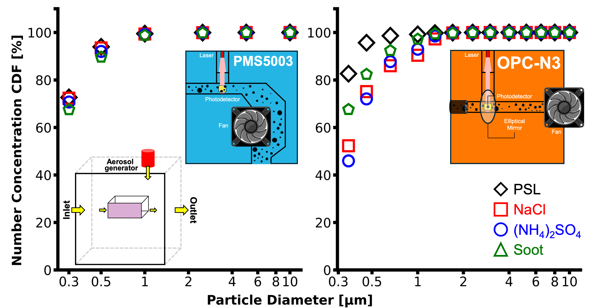
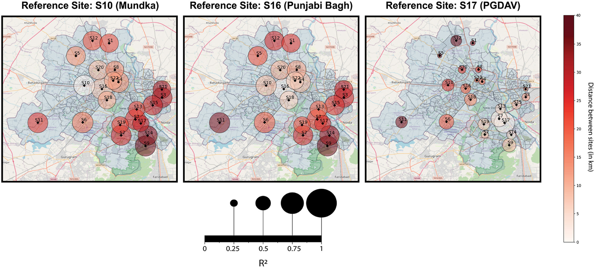

Hi, I'm Dr. Vasudev Malyan!
Technical Expert – Air Quality Sensor Technologies at Ubiqedge Technologies Private Limited
"To model data is to translate the silent poetry of the environment into a language we can finally read"
Research Interests
Aerosol Science
Low-cost Sensors
Aerosol Optics
Machine Learning
First Principles Modeling
Highlights
Design and Evaluation of a Calibration Chamber for Low-Cost PM Sensors — Part 2: Mass Concentration-Based Assessment
ACS ES&T Air (2026).

Design and Evaluation of a Calibration Chamber for Low-Cost PM Sensors — Part 1: Number Concentration-Based Assessment
ACS ES&T Air (2025).

Assessing the Spatial Transferability of Calibration Models across a Low-cost Sensors Network
Journal of Aerosol Science (2024).
